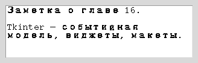

Глава 16 · Создаём классные приложения с Tkinter
Мини-проект: редактор заметок
Дневник заметок из главы 15 наконец получает настоящее окно и меню.
Прямое продолжение дневника заметок из главы 15 (15.4) — теперь с настоящим окном, многострочным полем и меню «Файл».

redaktor_zametok.py
class NotesEditorApp:
def __init__(self, root):
self.root = root
self.current_path = None
self.dirty = False
self.text_widget = ScrolledText(root, wrap="word")
self.text_widget.pack(fill="both", expand=True)
self.text_widget.bind("<<Modified>>", self.on_text_modified)
self.build_menu()
self.root.protocol("WM_DELETE_WINDOW", self.on_exit)
def on_text_modified(self, event):
self.dirty = True
self.text_widget.edit_modified(False) # сбрасываем встроенный флаг Tk
def confirm_discard_if_dirty(self):
"""True — можно продолжать (New/Open/Exit). False — пользователь передумал."""
if not self.dirty:
return True
answer = messagebox.askyesnocancel(
"Несохранённые изменения",
"Сохранить изменения перед продолжением?",
)
if answer is None: # Cancel — прервать текущее действие
return False
if answer: # Yes — продолжить, только если сохранение реально удалось
return self.save_as()
return True # No — продолжить, не сохраняя
def on_exit(self):
if self.confirm_discard_if_dirty():
self.root.destroy()
def save_as(self):
"""True — файл сохранён. False — пользователь отменил диалог "Сохранить как"."""
filename = filedialog.asksaveasfilename(defaultextension=".txt")
if not filename:
return False
self.current_path = Path(filename)
self.current_path.write_text(self.text_widget.get("1.0", "end-1c"), encoding="utf-8")
self.dirty = False
return TrueТри исхода одного вопроса
messagebox.askyesnocancel(...) возвращает True (Да — сохранить), False (Нет — не сохранять) или None (Отмена/закрыт диалог — прервать текущее действие полностью). Обычный askyesno умеет только два первых варианта — для «Выход с несохранёнными изменениями» нужен именно третий: возможность передумать закрывать приложение вообще.Yes — это ещё не сохранено
Если пользователь выбрал «Да», но затем нажал «Отмена» в диалоге
asksaveasfilename, файл не сохранён — и продолжать действие (закрывать окно, открывать другой файл) нельзя, иначе несохранённый текст будет потерян. Поэтому confirm_discard_if_dirty() возвращает результат самого save_as(), а не True сразу после вызова «Да».Ничего принципиально нового про файлы
filedialog (16.19), Path.read_text/write_text(encoding="utf-8") (глава 15), ScrolledText (готовая связка Text + Scrollbar) — все части уже знакомы, здесь они просто собраны в одно приложение.★★ Самостоятельная задача
Новый и Открыть тоже спрашивают
Добавьте методы new_file() и open_file(), каждый из которых сначала вызывает confirm_discard_if_dirty() — и продолжает только если он вернул True.
Практика: редактор заметок
Модуль tkinter открывает нативное окно Python — выполните локально в VS Code, PyCharm или Jupyter
Практика выполняется локально